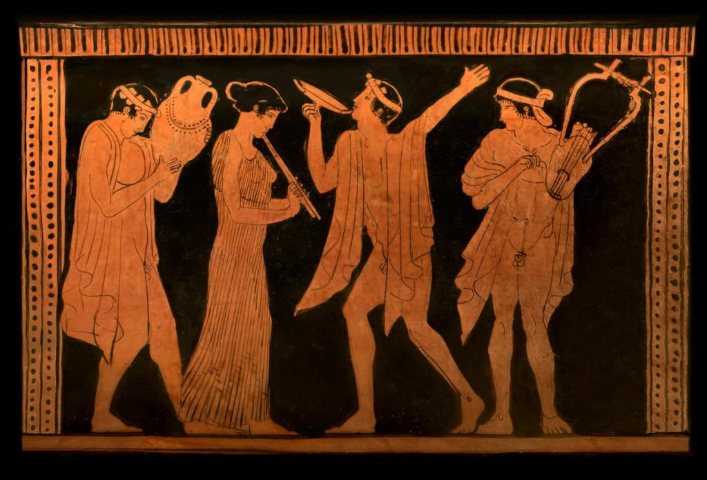
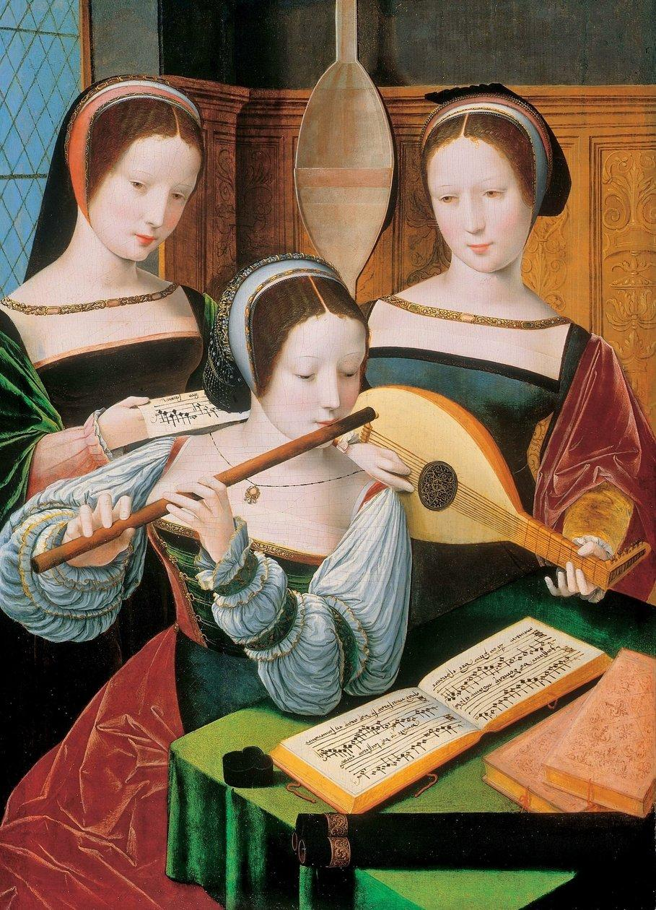
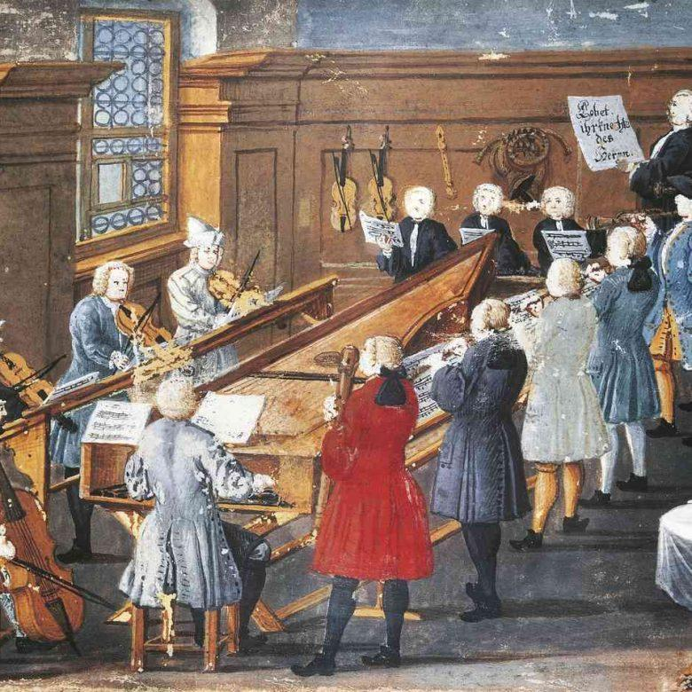
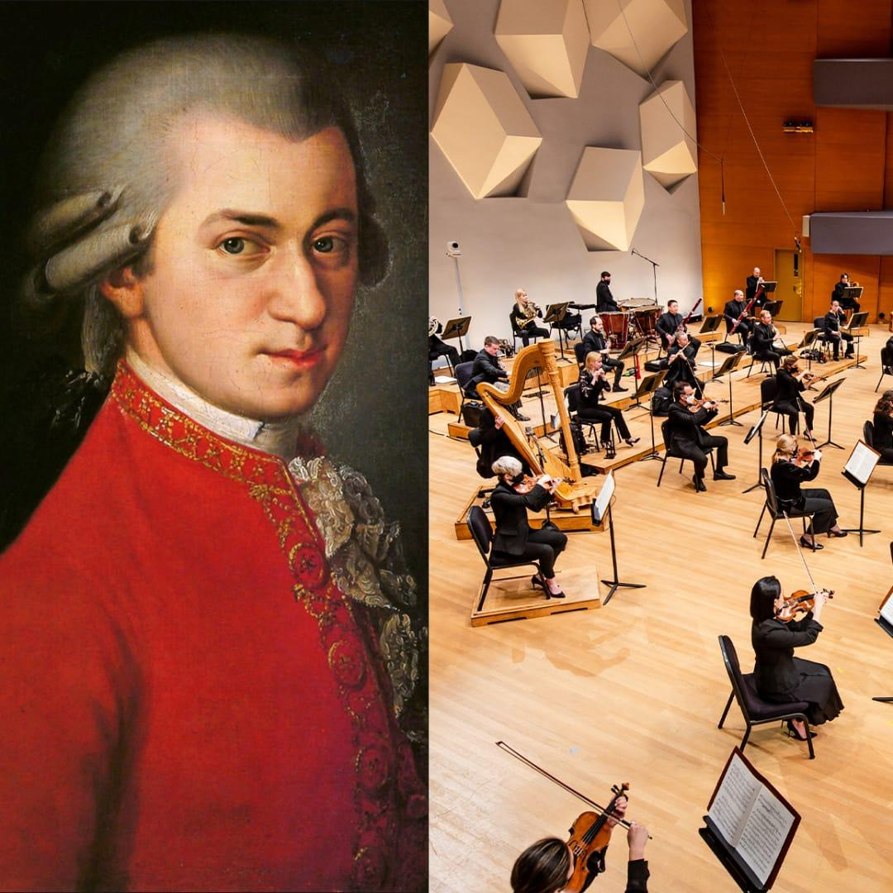
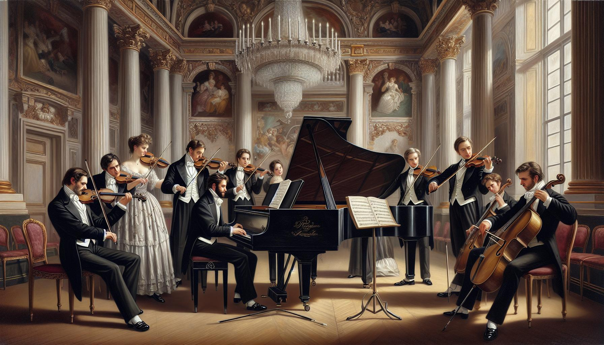
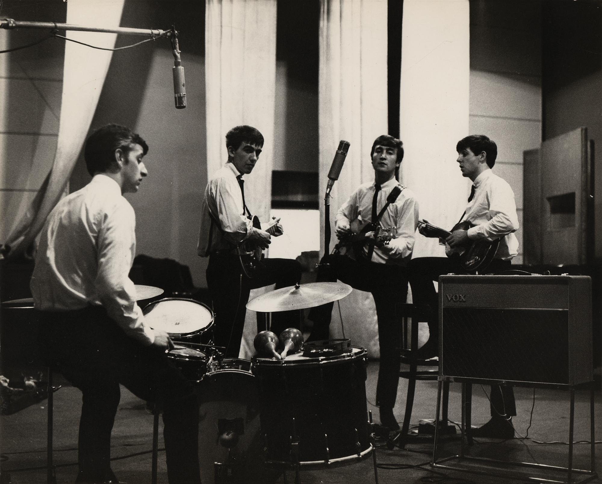
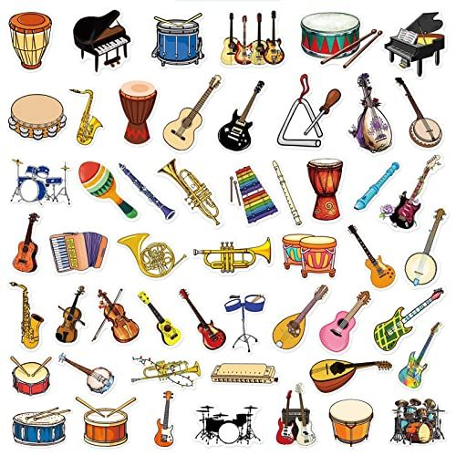

Sejarah Singkat Musik

Zaman Prasejarah
Musik bermula dari suara alam, tepukan tangan, nyanyian, dan alat musik sederhana. Manusia menggunakan musik untuk ritual.

Zaman Kuno
Musik berkembang di Mesir, Yunani, Romawi, India, dan Tiongkok. Musik digunakan dalam upacara keagamaan, hiburan, dan kegiatan kerajaan. Alat musik seperti kecapi, seruling, dan harpa mulai dikenal.

Abad Pertengahan
Musik gereja berkembang pesat di Eropa. Nyanyian Gregorian menjadi salah satu bentuk musik penting. Notasi musik juga mulai berkembang sehingga musik dapat ditulis dan dipelajari.

Zaman Renaisans
Musik semakin beragam, baik untuk keagamaan maupun hiburan. Musik vokal dan permainan beberapa melodi secara bersamaan berkembang. Instrumen seperti lute dan alat musik tiup semakin populer.

Zaman Barok
Musik memiliki ornamen yang kaya dan ekspresi yang kuat. Opera dan musik orkestra berkembang. Tokoh pentingnya adalah Johann Sebastian Bach, Antonio Vivaldi, dan George Frideric Handel.

Zaman klasik
Musik mengutamakan keseimbangan, keteraturan, dan kejelasan melodi. Bentuk simfoni dan sonata berkembang. Tokoh utamanya adalah Wolfgang Amadeus Mozart, Joseph Haydn, dan Ludwig van Beethoven pada awal kariernya.

Zaman Romantik
Musik lebih menonjolkan emosi, imajinasi, dan ekspresi pribadi. Orkestra semakin besar dan musik sering terinspirasi oleh alam, sastra, atau kisah tertentu. Tokohnya antara lain Chopin, Tchaikovsky, dan Beethoven pada periode akhirnya.

Zaman Moderen
Radio, piringan hitam, dan rekaman membuat musik lebih mudah disebarkan. Berbagai genre berkembang, seperti jazz, blues, rock, pop, reggae, dan musik elektronik.
Alat Musik

